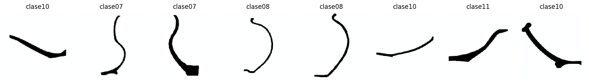
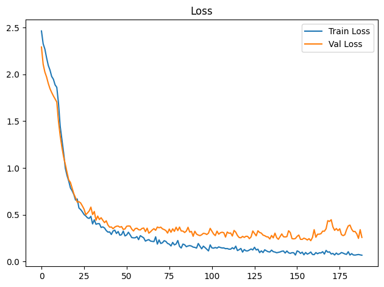
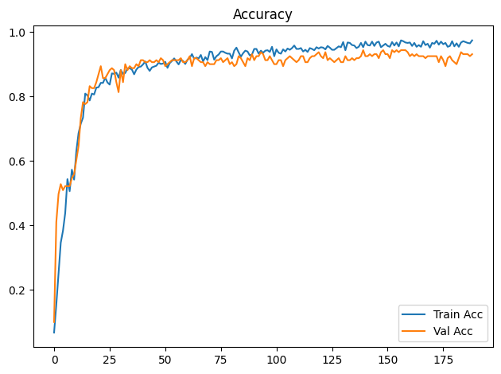
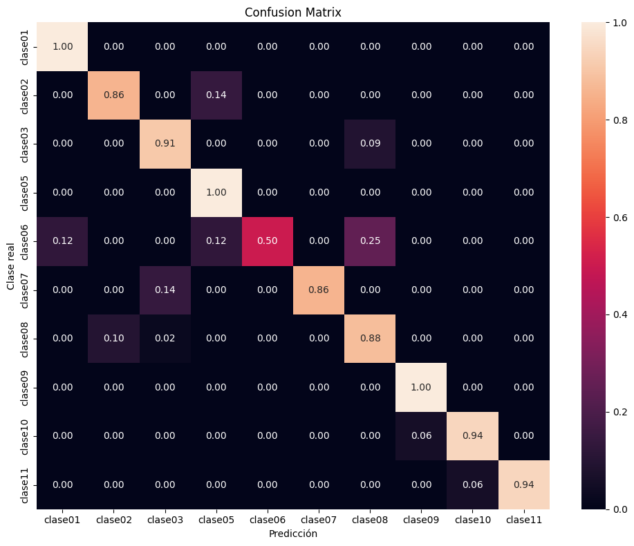

Dispositivo utilizado para procesamiento: CUDA - NVIDIA GeForce GTX 1650Entrenamiento de CNN ResNet-18 con Transfer Learning
Objetivos
- Construir un modelo baseline de clasificación mediante transfer learning con ResNet18 preentrenada.
- Entrenar inicialmente solo la capa clasificadora y descongelar
layer4enUNFREEZE_EPOCHcon una tasa de aprendizaje menor. - Aplicar transformaciones y aumentación de datos al conjunto de entrenamiento.
- Entrenar y validar el modelo registrando loss y accuracy por época.
- Detener el entrenamiento si val_loss no mejora suficientemente durante la paciencia configurada.
- Evaluar el modelo de la mejor época de validación sobre el conjunto de prueba.
- Analizar los resultados mediante accuracy, precision, recall, F1-score, reporte de clasificación y matriz de confusión normalizada.
- Guardar los pesos restaurados de la mejor época de validación (o los finales si se desactiva la parada anticipada).
Dispositivo para procesamiento
División de datos
La pertenencia de cada imagen a train, val o test se lee de la metadata generada por el notebook de división. La relación se realiza mediante ruta_relativa; por tanto, el split no se recalcula aunque cambien la semilla o los parámetros del entrenamiento.
Dataset seleccionado: completos
Directorio de datos: /home/rafael/Dev/vasijas/data/10.cuadrados_divididos_en_train_val_y_test
Metadata de split: data/10.cuadrados_divididos_en_train_val_y_test/metadata.csv
Clases: clase01 clase02 clase03 clase05 clase06 clase07 clase08 clase09 clase10 clase11
Split persistido -> train: 749, val: 161, test: 161
Conteo train por clase: [18, 32, 50, 39, 36, 34, 196, 14, 248, 82]
Pesos de clase: [4.161, 2.341, 1.498, 1.921, 2.081, 2.203, 0.382, 5.35, 0.302, 0.913]Epoch 1/300
Train Loss: 2.4637 | Train Acc: 0.0668 | Val Loss: 2.2921 | Val Acc: 0.0994
Tiempo de epoch: 0:00:08.207259
Epoch 2/300
Train Loss: 2.3264 | Train Acc: 0.1535 | Val Loss: 2.1085 | Val Acc: 0.4099
Tiempo de epoch: 0:00:05.250596
Epoch 3/300
Train Loss: 2.2704 | Train Acc: 0.2497 | Val Loss: 2.0249 | Val Acc: 0.4969
Tiempo de epoch: 0:00:05.390076
Epoch 4/300
Train Loss: 2.1778 | Train Acc: 0.3458 | Val Loss: 1.9723 | Val Acc: 0.5280
Tiempo de epoch: 0:00:05.204871
Epoch 5/300
Train Loss: 2.0959 | Train Acc: 0.3832 | Val Loss: 1.9035 | Val Acc: 0.5093
Tiempo de epoch: 0:00:05.193432
Epoch 6/300
Train Loss: 2.0460 | Train Acc: 0.4379 | Val Loss: 1.8470 | Val Acc: 0.5217
Tiempo de epoch: 0:00:05.305095
Epoch 7/300
Train Loss: 1.9774 | Train Acc: 0.5434 | Val Loss: 1.8064 | Val Acc: 0.5217
Tiempo de epoch: 0:00:05.223259
Epoch 8/300
Train Loss: 1.9482 | Train Acc: 0.5060 | Val Loss: 1.7696 | Val Acc: 0.5217
Tiempo de epoch: 0:00:05.218436
Epoch 9/300
Train Loss: 1.8877 | Train Acc: 0.5728 | Val Loss: 1.7373 | Val Acc: 0.5466
Tiempo de epoch: 0:00:05.287400
Epoch 10/300
Train Loss: 1.8611 | Train Acc: 0.5421 | Val Loss: 1.7048 | Val Acc: 0.5590
Tiempo de epoch: 0:00:05.196136
Epoch 11: se descongela layer4 con lr=1.00e-05 (head lr=1.00e-04)
Epoch 11/300
Train Loss: 1.6906 | Train Acc: 0.6302 | Val Loss: 1.4954 | Val Acc: 0.6025
Tiempo de epoch: 0:00:08.702891
Epoch 12/300
Train Loss: 1.4451 | Train Acc: 0.6862 | Val Loss: 1.3430 | Val Acc: 0.6460
Tiempo de epoch: 0:00:06.776362
Epoch 13/300
Train Loss: 1.3022 | Train Acc: 0.7156 | Val Loss: 1.2225 | Val Acc: 0.7329
Tiempo de epoch: 0:00:06.779749
Epoch 14/300
Train Loss: 1.1630 | Train Acc: 0.7343 | Val Loss: 1.1175 | Val Acc: 0.7826
Tiempo de epoch: 0:00:06.806929
Epoch 15/300
Train Loss: 0.9967 | Train Acc: 0.8091 | Val Loss: 1.0384 | Val Acc: 0.7764
Tiempo de epoch: 0:00:06.860820
Epoch 16/300
Train Loss: 0.9185 | Train Acc: 0.8037 | Val Loss: 0.9524 | Val Acc: 0.7826
Tiempo de epoch: 0:00:06.885049
Epoch 17/300
Train Loss: 0.8598 | Train Acc: 0.7877 | Val Loss: 0.8716 | Val Acc: 0.8323
Tiempo de epoch: 0:00:06.815069
Epoch 18/300
Train Loss: 0.7867 | Train Acc: 0.8091 | Val Loss: 0.8450 | Val Acc: 0.8261
Tiempo de epoch: 0:00:06.845175
Epoch 19/300
Train Loss: 0.7556 | Train Acc: 0.8064 | Val Loss: 0.7832 | Val Acc: 0.8261
Tiempo de epoch: 0:00:06.808672
Epoch 20/300
Train Loss: 0.7160 | Train Acc: 0.8278 | Val Loss: 0.7228 | Val Acc: 0.8447
Tiempo de epoch: 0:00:06.889152
Epoch 21/300
Train Loss: 0.6563 | Train Acc: 0.8291 | Val Loss: 0.6812 | Val Acc: 0.8696
Tiempo de epoch: 0:00:06.785592
Epoch 22/300
Train Loss: 0.6679 | Train Acc: 0.8425 | Val Loss: 0.6345 | Val Acc: 0.8944
Tiempo de epoch: 0:00:06.793422
Epoch 23/300
Train Loss: 0.5721 | Train Acc: 0.8425 | Val Loss: 0.6391 | Val Acc: 0.8571
Tiempo de epoch: 0:00:06.993365
Epoch 24/300
Train Loss: 0.5551 | Train Acc: 0.8585 | Val Loss: 0.6254 | Val Acc: 0.8571
Tiempo de epoch: 0:00:07.005874
Epoch 25/300
Train Loss: 0.5312 | Train Acc: 0.8438 | Val Loss: 0.5941 | Val Acc: 0.8696
Tiempo de epoch: 0:00:06.889392
Epoch 26/300
Train Loss: 0.5020 | Train Acc: 0.8371 | Val Loss: 0.5593 | Val Acc: 0.8820
Tiempo de epoch: 0:00:07.053043
Epoch 27/300
Train Loss: 0.4870 | Train Acc: 0.8718 | Val Loss: 0.5005 | Val Acc: 0.8882
Tiempo de epoch: 0:00:06.911283
Epoch 28/300
Train Loss: 0.4672 | Train Acc: 0.8705 | Val Loss: 0.5181 | Val Acc: 0.8820
Tiempo de epoch: 0:00:06.874554
Epoch 29/300
Train Loss: 0.4603 | Train Acc: 0.8745 | Val Loss: 0.5401 | Val Acc: 0.8447
Tiempo de epoch: 0:00:06.883790
Epoch 30/300
Train Loss: 0.4830 | Train Acc: 0.8585 | Val Loss: 0.5812 | Val Acc: 0.8137
Tiempo de epoch: 0:00:06.739595
Epoch 31/300
Train Loss: 0.4017 | Train Acc: 0.8825 | Val Loss: 0.5014 | Val Acc: 0.8820
Tiempo de epoch: 0:00:06.829099
Epoch 32/300
Train Loss: 0.4457 | Train Acc: 0.8705 | Val Loss: 0.5345 | Val Acc: 0.8447
Tiempo de epoch: 0:00:06.863774
Epoch 33/300
Train Loss: 0.3977 | Train Acc: 0.8732 | Val Loss: 0.4407 | Val Acc: 0.9006
Tiempo de epoch: 0:00:06.841685
Epoch 34/300
Train Loss: 0.4046 | Train Acc: 0.8879 | Val Loss: 0.4856 | Val Acc: 0.8820
Tiempo de epoch: 0:00:06.943196
Epoch 35/300
Train Loss: 0.4043 | Train Acc: 0.8879 | Val Loss: 0.4483 | Val Acc: 0.8944
Tiempo de epoch: 0:00:06.870368
Epoch 36/300
Train Loss: 0.3636 | Train Acc: 0.8838 | Val Loss: 0.4680 | Val Acc: 0.8882
Tiempo de epoch: 0:00:06.805121
Epoch 37/300
Train Loss: 0.3702 | Train Acc: 0.8692 | Val Loss: 0.4407 | Val Acc: 0.8882
Tiempo de epoch: 0:00:06.970698
Epoch 38/300
Train Loss: 0.3583 | Train Acc: 0.8838 | Val Loss: 0.4154 | Val Acc: 0.9006
Tiempo de epoch: 0:00:06.949792
Epoch 39/300
Train Loss: 0.3309 | Train Acc: 0.8919 | Val Loss: 0.4351 | Val Acc: 0.8944
Tiempo de epoch: 0:00:06.948348
Epoch 40/300
Train Loss: 0.3141 | Train Acc: 0.8932 | Val Loss: 0.3903 | Val Acc: 0.9130
Tiempo de epoch: 0:00:06.858222
Epoch 41/300
Train Loss: 0.3166 | Train Acc: 0.8999 | Val Loss: 0.3671 | Val Acc: 0.9130
Tiempo de epoch: 0:00:06.900043
Epoch 42/300
Train Loss: 0.2889 | Train Acc: 0.9092 | Val Loss: 0.3692 | Val Acc: 0.9068
Tiempo de epoch: 0:00:06.915188
Epoch 43/300
Train Loss: 0.3257 | Train Acc: 0.8892 | Val Loss: 0.3503 | Val Acc: 0.9068
Tiempo de epoch: 0:00:06.871877
Epoch 44/300
Train Loss: 0.3356 | Train Acc: 0.8798 | Val Loss: 0.3676 | Val Acc: 0.9130
Tiempo de epoch: 0:00:06.910495
Epoch 45/300
Train Loss: 0.2993 | Train Acc: 0.8905 | Val Loss: 0.3770 | Val Acc: 0.9068
Tiempo de epoch: 0:00:06.779366
Epoch 46/300
Train Loss: 0.3206 | Train Acc: 0.8932 | Val Loss: 0.3787 | Val Acc: 0.9068
Tiempo de epoch: 0:00:06.867895
Epoch 47/300
Train Loss: 0.2808 | Train Acc: 0.8959 | Val Loss: 0.3668 | Val Acc: 0.9130
Tiempo de epoch: 0:00:06.765521
Epoch 48/300
Train Loss: 0.2866 | Train Acc: 0.9052 | Val Loss: 0.3733 | Val Acc: 0.9068
Tiempo de epoch: 0:00:06.909618
Epoch 49/300
Train Loss: 0.3250 | Train Acc: 0.9012 | Val Loss: 0.3426 | Val Acc: 0.9193
Tiempo de epoch: 0:00:06.788345
Epoch 50/300
Train Loss: 0.2733 | Train Acc: 0.9025 | Val Loss: 0.3479 | Val Acc: 0.9130
Tiempo de epoch: 0:00:06.856955
Epoch 51/300
Train Loss: 0.2834 | Train Acc: 0.9079 | Val Loss: 0.3768 | Val Acc: 0.8944
Tiempo de epoch: 0:00:06.853628
Epoch 52/300
Train Loss: 0.3129 | Train Acc: 0.8892 | Val Loss: 0.3794 | Val Acc: 0.9006
Tiempo de epoch: 0:00:06.884341
Epoch 53/300
Train Loss: 0.2855 | Train Acc: 0.9039 | Val Loss: 0.3779 | Val Acc: 0.9068
Tiempo de epoch: 0:00:07.069304
Epoch 54/300
Train Loss: 0.2555 | Train Acc: 0.9105 | Val Loss: 0.3457 | Val Acc: 0.9130
Tiempo de epoch: 0:00:06.819365
Epoch 55/300
Train Loss: 0.2530 | Train Acc: 0.9186 | Val Loss: 0.3261 | Val Acc: 0.9130
Tiempo de epoch: 0:00:06.966087
Epoch 56/300
Train Loss: 0.2533 | Train Acc: 0.9092 | Val Loss: 0.3515 | Val Acc: 0.9130
Tiempo de epoch: 0:00:06.888571
Epoch 57/300
Train Loss: 0.2661 | Train Acc: 0.8999 | Val Loss: 0.3557 | Val Acc: 0.9130
Tiempo de epoch: 0:00:06.872847
Epoch 58/300
Train Loss: 0.2337 | Train Acc: 0.9132 | Val Loss: 0.3399 | Val Acc: 0.9193
Tiempo de epoch: 0:00:06.949506
Epoch 59/300
Train Loss: 0.2762 | Train Acc: 0.9105 | Val Loss: 0.3371 | Val Acc: 0.9068
Tiempo de epoch: 0:00:06.871345
Epoch 60/300
Train Loss: 0.2648 | Train Acc: 0.9012 | Val Loss: 0.3534 | Val Acc: 0.9068
Tiempo de epoch: 0:00:06.898685
Epoch 61/300
Train Loss: 0.2527 | Train Acc: 0.9146 | Val Loss: 0.3581 | Val Acc: 0.9130
Tiempo de epoch: 0:00:06.841516
Epoch 62/300
Train Loss: 0.2179 | Train Acc: 0.9199 | Val Loss: 0.3190 | Val Acc: 0.9255
Tiempo de epoch: 0:00:06.883876
Epoch 63/300
Train Loss: 0.2280 | Train Acc: 0.9319 | Val Loss: 0.3561 | Val Acc: 0.8944
Tiempo de epoch: 0:00:07.007571
Epoch 64/300
Train Loss: 0.2339 | Train Acc: 0.9172 | Val Loss: 0.3028 | Val Acc: 0.9193
Tiempo de epoch: 0:00:06.755237
Epoch 65/300
Train Loss: 0.2186 | Train Acc: 0.9212 | Val Loss: 0.3176 | Val Acc: 0.9193
Tiempo de epoch: 0:00:06.787877
Epoch 66/300
Train Loss: 0.2149 | Train Acc: 0.9186 | Val Loss: 0.3369 | Val Acc: 0.9130
Tiempo de epoch: 0:00:06.866864
Epoch 67/300
Train Loss: 0.2128 | Train Acc: 0.9292 | Val Loss: 0.3511 | Val Acc: 0.9068
Tiempo de epoch: 0:00:06.912183
Epoch 68/300
Train Loss: 0.2639 | Train Acc: 0.9092 | Val Loss: 0.3334 | Val Acc: 0.9068
Tiempo de epoch: 0:00:06.876608
Epoch 69/300
Train Loss: 0.1860 | Train Acc: 0.9226 | Val Loss: 0.3685 | Val Acc: 0.8944
Tiempo de epoch: 0:00:06.840115
Epoch 70/300
Train Loss: 0.2307 | Train Acc: 0.9132 | Val Loss: 0.3606 | Val Acc: 0.9068
Tiempo de epoch: 0:00:06.823578
Epoch 71/300
Train Loss: 0.1925 | Train Acc: 0.9399 | Val Loss: 0.3671 | Val Acc: 0.9006
Tiempo de epoch: 0:00:06.825176
Epoch 72/300
Train Loss: 0.2005 | Train Acc: 0.9386 | Val Loss: 0.3488 | Val Acc: 0.9006
Tiempo de epoch: 0:00:06.877009
Epoch 73/300
Train Loss: 0.2226 | Train Acc: 0.9146 | Val Loss: 0.3413 | Val Acc: 0.9006
Tiempo de epoch: 0:00:06.942504
Epoch 74/300
Train Loss: 0.2147 | Train Acc: 0.9252 | Val Loss: 0.3306 | Val Acc: 0.9130
Tiempo de epoch: 0:00:06.814812
Epoch 75/300
Train Loss: 0.1931 | Train Acc: 0.9306 | Val Loss: 0.3036 | Val Acc: 0.9130
Tiempo de epoch: 0:00:06.896850
Epoch 76/300
Train Loss: 0.1854 | Train Acc: 0.9399 | Val Loss: 0.3469 | Val Acc: 0.9193
Tiempo de epoch: 0:00:06.858812
Epoch 77/300
Train Loss: 0.1664 | Train Acc: 0.9399 | Val Loss: 0.3124 | Val Acc: 0.9068
Tiempo de epoch: 0:00:06.886385
Epoch 78/300
Train Loss: 0.2041 | Train Acc: 0.9359 | Val Loss: 0.3494 | Val Acc: 0.9130
Tiempo de epoch: 0:00:06.843585
Epoch 79/300
Train Loss: 0.1774 | Train Acc: 0.9332 | Val Loss: 0.3219 | Val Acc: 0.9193
Tiempo de epoch: 0:00:06.932786
Epoch 80/300
Train Loss: 0.1869 | Train Acc: 0.9332 | Val Loss: 0.3664 | Val Acc: 0.9006
Tiempo de epoch: 0:00:06.852419
Epoch 81/300
Train Loss: 0.2243 | Train Acc: 0.9186 | Val Loss: 0.3303 | Val Acc: 0.9068
Tiempo de epoch: 0:00:06.837995
Epoch 82/300
Train Loss: 0.1622 | Train Acc: 0.9426 | Val Loss: 0.3678 | Val Acc: 0.8944
Tiempo de epoch: 0:00:06.853948
Epoch 83/300
Train Loss: 0.1441 | Train Acc: 0.9519 | Val Loss: 0.3261 | Val Acc: 0.9006
Tiempo de epoch: 0:00:06.848611
Epoch 84/300
Train Loss: 0.1864 | Train Acc: 0.9372 | Val Loss: 0.3253 | Val Acc: 0.9255
Tiempo de epoch: 0:00:06.902825
Epoch 85/300
Train Loss: 0.1792 | Train Acc: 0.9239 | Val Loss: 0.3099 | Val Acc: 0.9193
Tiempo de epoch: 0:00:06.938078
Epoch 86/300
Train Loss: 0.1579 | Train Acc: 0.9346 | Val Loss: 0.3252 | Val Acc: 0.9068
Tiempo de epoch: 0:00:06.883540
Epoch 87/300
Train Loss: 0.1661 | Train Acc: 0.9426 | Val Loss: 0.3657 | Val Acc: 0.8944
Tiempo de epoch: 0:00:06.896008
Epoch 88/300
Train Loss: 0.1701 | Train Acc: 0.9399 | Val Loss: 0.3148 | Val Acc: 0.9193
Tiempo de epoch: 0:00:06.879122
Epoch 89/300
Train Loss: 0.1650 | Train Acc: 0.9279 | Val Loss: 0.3214 | Val Acc: 0.9130
Tiempo de epoch: 0:00:07.089204
Epoch 90/300
Train Loss: 0.1539 | Train Acc: 0.9306 | Val Loss: 0.2695 | Val Acc: 0.9317
Tiempo de epoch: 0:00:06.840987
Epoch 91/300
Train Loss: 0.1510 | Train Acc: 0.9479 | Val Loss: 0.3234 | Val Acc: 0.9130
Tiempo de epoch: 0:00:06.897347
Epoch 92/300
Train Loss: 0.1432 | Train Acc: 0.9479 | Val Loss: 0.2927 | Val Acc: 0.9255
Tiempo de epoch: 0:00:06.904802
Epoch 93/300
Train Loss: 0.1926 | Train Acc: 0.9332 | Val Loss: 0.2827 | Val Acc: 0.9255
Tiempo de epoch: 0:00:06.849972
Epoch 94/300
Train Loss: 0.1632 | Train Acc: 0.9426 | Val Loss: 0.2766 | Val Acc: 0.9379
Tiempo de epoch: 0:00:06.857096
Epoch 95/300
Train Loss: 0.1357 | Train Acc: 0.9359 | Val Loss: 0.2857 | Val Acc: 0.9317
Tiempo de epoch: 0:00:06.807466
Epoch 96/300
Train Loss: 0.1642 | Train Acc: 0.9426 | Val Loss: 0.3014 | Val Acc: 0.9130
Tiempo de epoch: 0:00:06.824200
Epoch 97/300
Train Loss: 0.1486 | Train Acc: 0.9439 | Val Loss: 0.2984 | Val Acc: 0.9130
Tiempo de epoch: 0:00:06.894778
Epoch 98/300
Train Loss: 0.1306 | Train Acc: 0.9386 | Val Loss: 0.2887 | Val Acc: 0.9255
Tiempo de epoch: 0:00:06.905349
Epoch 99/300
Train Loss: 0.1134 | Train Acc: 0.9546 | Val Loss: 0.3030 | Val Acc: 0.9130
Tiempo de epoch: 0:00:06.898205
Epoch 100/300
Train Loss: 0.1776 | Train Acc: 0.9252 | Val Loss: 0.3541 | Val Acc: 0.9006
Tiempo de epoch: 0:00:06.825785
Epoch 101/300
Train Loss: 0.1453 | Train Acc: 0.9466 | Val Loss: 0.3236 | Val Acc: 0.9006
Tiempo de epoch: 0:00:06.790012
Epoch 102/300
Train Loss: 0.1425 | Train Acc: 0.9359 | Val Loss: 0.2939 | Val Acc: 0.9130
Tiempo de epoch: 0:00:06.958694
Epoch 103/300
Train Loss: 0.1499 | Train Acc: 0.9332 | Val Loss: 0.2770 | Val Acc: 0.9130
Tiempo de epoch: 0:00:06.798150
Epoch 104/300
Train Loss: 0.1427 | Train Acc: 0.9466 | Val Loss: 0.3245 | Val Acc: 0.8944
Tiempo de epoch: 0:00:06.817134
Epoch 105/300
Train Loss: 0.1563 | Train Acc: 0.9399 | Val Loss: 0.2916 | Val Acc: 0.9130
Tiempo de epoch: 0:00:06.860594
Epoch 106/300
Train Loss: 0.1493 | Train Acc: 0.9493 | Val Loss: 0.3073 | Val Acc: 0.9193
Tiempo de epoch: 0:00:06.807310
Epoch 107/300
Train Loss: 0.1446 | Train Acc: 0.9453 | Val Loss: 0.3130 | Val Acc: 0.9255
Tiempo de epoch: 0:00:06.965222
Epoch 108/300
Train Loss: 0.1449 | Train Acc: 0.9506 | Val Loss: 0.3072 | Val Acc: 0.9193
Tiempo de epoch: 0:00:06.839464
Epoch 109/300
Train Loss: 0.1373 | Train Acc: 0.9586 | Val Loss: 0.2609 | Val Acc: 0.9130
Tiempo de epoch: 0:00:06.833235
Epoch 110/300
Train Loss: 0.1387 | Train Acc: 0.9479 | Val Loss: 0.3150 | Val Acc: 0.9068
Tiempo de epoch: 0:00:06.794700
Epoch 111/300
Train Loss: 0.1319 | Train Acc: 0.9479 | Val Loss: 0.3017 | Val Acc: 0.9130
Tiempo de epoch: 0:00:06.879942
Epoch 112/300
Train Loss: 0.1317 | Train Acc: 0.9506 | Val Loss: 0.3051 | Val Acc: 0.9255
Tiempo de epoch: 0:00:06.892622
Epoch 113/300
Train Loss: 0.1474 | Train Acc: 0.9399 | Val Loss: 0.2722 | Val Acc: 0.9255
Tiempo de epoch: 0:00:06.826576
Epoch 114/300
Train Loss: 0.1344 | Train Acc: 0.9453 | Val Loss: 0.3319 | Val Acc: 0.9068
Tiempo de epoch: 0:00:06.819756
Epoch 115/300
Train Loss: 0.1638 | Train Acc: 0.9386 | Val Loss: 0.3135 | Val Acc: 0.9068
Tiempo de epoch: 0:00:06.944083
Epoch 116/300
Train Loss: 0.1167 | Train Acc: 0.9506 | Val Loss: 0.2778 | Val Acc: 0.9193
Tiempo de epoch: 0:00:06.895029
Epoch 117/300
Train Loss: 0.1265 | Train Acc: 0.9479 | Val Loss: 0.2561 | Val Acc: 0.9255
Tiempo de epoch: 0:00:06.823159
Epoch 118/300
Train Loss: 0.1396 | Train Acc: 0.9439 | Val Loss: 0.2537 | Val Acc: 0.9255
Tiempo de epoch: 0:00:06.997407
Epoch 119/300
Train Loss: 0.1006 | Train Acc: 0.9533 | Val Loss: 0.2686 | Val Acc: 0.9317
Tiempo de epoch: 0:00:06.904068
Epoch 120/300
Train Loss: 0.1279 | Train Acc: 0.9493 | Val Loss: 0.2574 | Val Acc: 0.9379
Tiempo de epoch: 0:00:06.896857
Epoch 121/300
Train Loss: 0.1139 | Train Acc: 0.9533 | Val Loss: 0.2698 | Val Acc: 0.9255
Tiempo de epoch: 0:00:06.867742
Epoch 122/300
Train Loss: 0.1135 | Train Acc: 0.9519 | Val Loss: 0.2683 | Val Acc: 0.9193
Tiempo de epoch: 0:00:06.924137
Epoch 123/300
Train Loss: 0.1230 | Train Acc: 0.9466 | Val Loss: 0.2443 | Val Acc: 0.9379
Tiempo de epoch: 0:00:07.025336
Epoch 124/300
Train Loss: 0.1339 | Train Acc: 0.9573 | Val Loss: 0.2637 | Val Acc: 0.9130
Tiempo de epoch: 0:00:06.884114
Epoch 125/300
Train Loss: 0.1234 | Train Acc: 0.9519 | Val Loss: 0.3263 | Val Acc: 0.9193
Tiempo de epoch: 0:00:06.933191
Epoch 126/300
Train Loss: 0.1520 | Train Acc: 0.9453 | Val Loss: 0.3009 | Val Acc: 0.9130
Tiempo de epoch: 0:00:06.813691
Epoch 127/300
Train Loss: 0.1229 | Train Acc: 0.9453 | Val Loss: 0.2744 | Val Acc: 0.9068
Tiempo de epoch: 0:00:06.890940
Epoch 128/300
Train Loss: 0.1319 | Train Acc: 0.9506 | Val Loss: 0.3282 | Val Acc: 0.9130
Tiempo de epoch: 0:00:06.776580
Epoch 129/300
Train Loss: 0.0951 | Train Acc: 0.9559 | Val Loss: 0.3103 | Val Acc: 0.9193
Tiempo de epoch: 0:00:06.882864
Epoch 130/300
Train Loss: 0.1137 | Train Acc: 0.9533 | Val Loss: 0.3036 | Val Acc: 0.9068
Tiempo de epoch: 0:00:06.882294
Epoch 131/300
Train Loss: 0.0953 | Train Acc: 0.9693 | Val Loss: 0.2820 | Val Acc: 0.9068
Tiempo de epoch: 0:00:06.795777
Epoch 132/300
Train Loss: 0.1253 | Train Acc: 0.9439 | Val Loss: 0.2758 | Val Acc: 0.9255
Tiempo de epoch: 0:00:06.926054
Epoch 133/300
Train Loss: 0.1139 | Train Acc: 0.9680 | Val Loss: 0.2648 | Val Acc: 0.9130
Tiempo de epoch: 0:00:06.898390
Epoch 134/300
Train Loss: 0.1045 | Train Acc: 0.9666 | Val Loss: 0.2623 | Val Acc: 0.9130
Tiempo de epoch: 0:00:06.816367
Epoch 135/300
Train Loss: 0.1015 | Train Acc: 0.9599 | Val Loss: 0.2407 | Val Acc: 0.9193
Tiempo de epoch: 0:00:06.983777
Epoch 136/300
Train Loss: 0.1218 | Train Acc: 0.9586 | Val Loss: 0.2783 | Val Acc: 0.9130
Tiempo de epoch: 0:00:06.787013
Epoch 137/300
Train Loss: 0.1051 | Train Acc: 0.9506 | Val Loss: 0.2526 | Val Acc: 0.9193
Tiempo de epoch: 0:00:06.889784
Epoch 138/300
Train Loss: 0.1009 | Train Acc: 0.9546 | Val Loss: 0.3031 | Val Acc: 0.9193
Tiempo de epoch: 0:00:06.763657
Epoch 139/300
Train Loss: 0.0936 | Train Acc: 0.9666 | Val Loss: 0.2548 | Val Acc: 0.9255
Tiempo de epoch: 0:00:06.882976
Epoch 140/300
Train Loss: 0.0981 | Train Acc: 0.9533 | Val Loss: 0.2370 | Val Acc: 0.9441
Tiempo de epoch: 0:00:06.905191
Epoch 141/300
Train Loss: 0.1019 | Train Acc: 0.9706 | Val Loss: 0.2664 | Val Acc: 0.9255
Tiempo de epoch: 0:00:06.882855
Epoch 142/300
Train Loss: 0.1097 | Train Acc: 0.9599 | Val Loss: 0.2946 | Val Acc: 0.9255
Tiempo de epoch: 0:00:06.875479
Epoch 143/300
Train Loss: 0.1120 | Train Acc: 0.9586 | Val Loss: 0.2646 | Val Acc: 0.9317
Tiempo de epoch: 0:00:06.824812
Epoch 144/300
Train Loss: 0.0904 | Train Acc: 0.9706 | Val Loss: 0.2623 | Val Acc: 0.9255
Tiempo de epoch: 0:00:06.796954
Epoch 145/300
Train Loss: 0.1126 | Train Acc: 0.9573 | Val Loss: 0.2659 | Val Acc: 0.9317
Tiempo de epoch: 0:00:06.889763
Epoch 146/300
Train Loss: 0.0929 | Train Acc: 0.9680 | Val Loss: 0.3286 | Val Acc: 0.9317
Tiempo de epoch: 0:00:06.887265
Epoch 147/300
Train Loss: 0.0871 | Train Acc: 0.9706 | Val Loss: 0.3086 | Val Acc: 0.9193
Tiempo de epoch: 0:00:06.913473
Epoch 148/300
Train Loss: 0.0945 | Train Acc: 0.9533 | Val Loss: 0.2446 | Val Acc: 0.9379
Tiempo de epoch: 0:00:06.774670
Epoch 149/300
Train Loss: 0.0936 | Train Acc: 0.9586 | Val Loss: 0.2415 | Val Acc: 0.9441
Tiempo de epoch: 0:00:06.775970
Epoch 150/300
Train Loss: 0.0693 | Train Acc: 0.9640 | Val Loss: 0.2458 | Val Acc: 0.9317
Tiempo de epoch: 0:00:06.839158
Epoch 151/300
Train Loss: 0.1133 | Train Acc: 0.9573 | Val Loss: 0.2685 | Val Acc: 0.9317
Tiempo de epoch: 0:00:06.802077
Epoch 152/300
Train Loss: 0.1056 | Train Acc: 0.9546 | Val Loss: 0.2828 | Val Acc: 0.9193
Tiempo de epoch: 0:00:06.882759
Epoch 153/300
Train Loss: 0.0862 | Train Acc: 0.9693 | Val Loss: 0.2370 | Val Acc: 0.9441
Tiempo de epoch: 0:00:06.878033
Epoch 154/300
Train Loss: 0.1001 | Train Acc: 0.9586 | Val Loss: 0.2363 | Val Acc: 0.9379
Tiempo de epoch: 0:00:06.884392
Epoch 155/300
Train Loss: 0.0717 | Train Acc: 0.9680 | Val Loss: 0.2496 | Val Acc: 0.9441
Tiempo de epoch: 0:00:06.837644
Epoch 156/300
Train Loss: 0.0966 | Train Acc: 0.9559 | Val Loss: 0.2422 | Val Acc: 0.9379
Tiempo de epoch: 0:00:06.842807
Epoch 157/300
Train Loss: 0.0787 | Train Acc: 0.9746 | Val Loss: 0.2298 | Val Acc: 0.9441
Tiempo de epoch: 0:00:06.821345
Epoch 158/300
Train Loss: 0.0875 | Train Acc: 0.9720 | Val Loss: 0.2444 | Val Acc: 0.9441
Tiempo de epoch: 0:00:06.862730
Epoch 159/300
Train Loss: 0.1017 | Train Acc: 0.9680 | Val Loss: 0.2224 | Val Acc: 0.9441
Tiempo de epoch: 0:00:06.847862
Epoch 160/300
Train Loss: 0.0753 | Train Acc: 0.9666 | Val Loss: 0.2562 | Val Acc: 0.9379
Tiempo de epoch: 0:00:06.768829
Epoch 161/300
Train Loss: 0.0732 | Train Acc: 0.9680 | Val Loss: 0.3405 | Val Acc: 0.9255
Tiempo de epoch: 0:00:06.849779
Epoch 162/300
Train Loss: 0.0957 | Train Acc: 0.9573 | Val Loss: 0.2591 | Val Acc: 0.9317
Tiempo de epoch: 0:00:06.891442
Epoch 163/300
Train Loss: 0.0827 | Train Acc: 0.9666 | Val Loss: 0.2915 | Val Acc: 0.9255
Tiempo de epoch: 0:00:06.812754
Epoch 164/300
Train Loss: 0.0929 | Train Acc: 0.9546 | Val Loss: 0.2920 | Val Acc: 0.9317
Tiempo de epoch: 0:00:06.845997
Epoch 165/300
Train Loss: 0.0913 | Train Acc: 0.9599 | Val Loss: 0.2975 | Val Acc: 0.9255
Tiempo de epoch: 0:00:06.833590
Epoch 166/300
Train Loss: 0.1049 | Train Acc: 0.9546 | Val Loss: 0.3246 | Val Acc: 0.9255
Tiempo de epoch: 0:00:06.784525
Epoch 167/300
Train Loss: 0.0797 | Train Acc: 0.9720 | Val Loss: 0.3235 | Val Acc: 0.9255
Tiempo de epoch: 0:00:06.826681
Epoch 168/300
Train Loss: 0.1184 | Train Acc: 0.9599 | Val Loss: 0.3504 | Val Acc: 0.9193
Tiempo de epoch: 0:00:06.791422
Epoch 169/300
Train Loss: 0.0996 | Train Acc: 0.9640 | Val Loss: 0.4363 | Val Acc: 0.9255
Tiempo de epoch: 0:00:06.837459
Epoch 170/300
Train Loss: 0.1034 | Train Acc: 0.9519 | Val Loss: 0.4282 | Val Acc: 0.9255
Tiempo de epoch: 0:00:06.870917
Epoch 171/300
Train Loss: 0.0801 | Train Acc: 0.9666 | Val Loss: 0.4467 | Val Acc: 0.9255
Tiempo de epoch: 0:00:06.858666
Epoch 172/300
Train Loss: 0.0865 | Train Acc: 0.9640 | Val Loss: 0.3696 | Val Acc: 0.9255
Tiempo de epoch: 0:00:06.923112
Epoch 173/300
Train Loss: 0.0697 | Train Acc: 0.9733 | Val Loss: 0.3330 | Val Acc: 0.9255
Tiempo de epoch: 0:00:06.847785
Epoch 174/300
Train Loss: 0.0904 | Train Acc: 0.9613 | Val Loss: 0.3526 | Val Acc: 0.9068
Tiempo de epoch: 0:00:06.835951
Epoch 175/300
Train Loss: 0.0754 | Train Acc: 0.9706 | Val Loss: 0.3300 | Val Acc: 0.9255
Tiempo de epoch: 0:00:06.845693
Epoch 176/300
Train Loss: 0.0822 | Train Acc: 0.9626 | Val Loss: 0.3495 | Val Acc: 0.9130
Tiempo de epoch: 0:00:06.957960
Epoch 177/300
Train Loss: 0.0958 | Train Acc: 0.9666 | Val Loss: 0.2875 | Val Acc: 0.8944
Tiempo de epoch: 0:00:06.798092
Epoch 178/300
Train Loss: 0.0897 | Train Acc: 0.9546 | Val Loss: 0.2766 | Val Acc: 0.9193
Tiempo de epoch: 0:00:06.794779
Epoch 179/300
Train Loss: 0.0807 | Train Acc: 0.9573 | Val Loss: 0.2858 | Val Acc: 0.9255
Tiempo de epoch: 0:00:07.042167
Epoch 180/300
Train Loss: 0.0762 | Train Acc: 0.9720 | Val Loss: 0.3396 | Val Acc: 0.9130
Tiempo de epoch: 0:00:06.775677
Epoch 181/300
Train Loss: 0.1046 | Train Acc: 0.9559 | Val Loss: 0.3800 | Val Acc: 0.9068
Tiempo de epoch: 0:00:06.934423
Epoch 182/300
Train Loss: 0.0687 | Train Acc: 0.9653 | Val Loss: 0.3895 | Val Acc: 0.9006
Tiempo de epoch: 0:00:06.924536
Epoch 183/300
Train Loss: 0.0841 | Train Acc: 0.9546 | Val Loss: 0.3452 | Val Acc: 0.9193
Tiempo de epoch: 0:00:06.982986
Epoch 184/300
Train Loss: 0.0699 | Train Acc: 0.9680 | Val Loss: 0.3198 | Val Acc: 0.9379
Tiempo de epoch: 0:00:06.876505
Epoch 185/300
Train Loss: 0.0685 | Train Acc: 0.9720 | Val Loss: 0.3211 | Val Acc: 0.9317
Tiempo de epoch: 0:00:06.911412
Epoch 186/300
Train Loss: 0.0720 | Train Acc: 0.9693 | Val Loss: 0.2955 | Val Acc: 0.9317
Tiempo de epoch: 0:00:06.899172
Epoch 187/300
Train Loss: 0.0750 | Train Acc: 0.9666 | Val Loss: 0.2470 | Val Acc: 0.9317
Tiempo de epoch: 0:00:06.778947
Epoch 188/300
Train Loss: 0.0708 | Train Acc: 0.9653 | Val Loss: 0.3405 | Val Acc: 0.9255
Tiempo de epoch: 0:00:06.779754
Epoch 189/300
Train Loss: 0.0674 | Train Acc: 0.9746 | Val Loss: 0.2574 | Val Acc: 0.9317
Tiempo de epoch: 0:00:06.904052
Parada anticipada en epoch 189: 30 épocas sin mejora suficiente de val_loss.
Se restauran los pesos de epoch 159 (val_loss=0.2224).
Tiempo total de entrenamiento: 0:21:26.962924

Test Acc: 0.9006
precision recall f1-score support
clase01 0.80 1.00 0.89 4
clase02 0.60 0.86 0.71 7
clase03 0.83 0.91 0.87 11
clase05 0.80 1.00 0.89 8
clase06 1.00 0.50 0.67 8
clase07 1.00 0.86 0.92 7
clase08 0.93 0.88 0.90 42
clase09 0.50 1.00 0.67 3
clase10 0.98 0.94 0.96 53
clase11 1.00 0.94 0.97 18
accuracy 0.90 161
macro avg 0.84 0.89 0.84 161
weighted avg 0.92 0.90 0.90 161

Modelo guardado en: output/models/model_resnet18_bs16_lr1e-4_weighted_unfreeze.pth